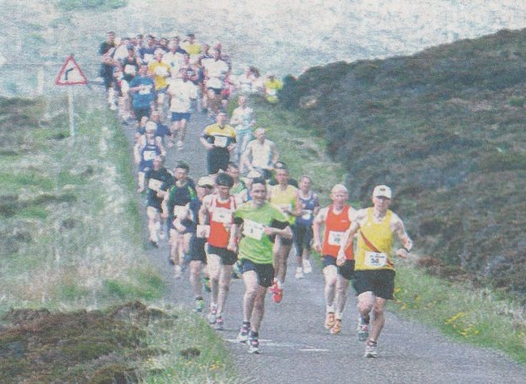

European Triathlon Championships
When not running cross country for Sevenoaks AC, Cath and Andrew Linney do triathlons. Andy Evans reports that:
Cath Linney came 3rd in the European Olympic distance (1.5k/40k/10k) triathlon race for the F40-44 age group. They were held in Alanya, Turkey on 14th June. See results here. Husband Andrew came 23rd in the sprint distance AG 45- 49 on the Saturday. See results here.
Burton Trail race near Lake Tahoe
And Simon Lewis was also on the podium after contesting the Burton Creek 12k trail run in the US. Simon says: "They had lots of age categories so I managed to pick up a third place in 55 to 60 age group. It was hard going dry trail running at 6500 ft above sea level." Results are here.

Hoy Half Marathon
Finally, Simon Hallpike got a mention in the Orcadian newspaper after finishing 2nd M60 in the 27th Isle of Hoy Half Marathon. Results here.
